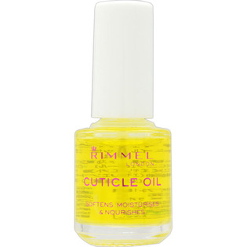

返回列表
产品名称：リンメル キューティクルオイル N

コーセー リンメル キューティクルオイル N ７ｍｌ
メーカー コーセー
JANコード 4971710425895
商品の特徴
＊緑茶エキス（チャ葉エキス）（保湿）
＊ビタミンE（トコフェロール）（製品の抗酸化剤）
＊アーモンド油（エモリエント）
＊ヒマワリ種子油（エモリエント） 配合
成分・分量
＜配合成分＞
アーモンド油、チャ葉エキス、トコフェロール、ヒマワリ種子油、酢酸トコフェロール、トリ（カプリル酸／カプリン酸）グリセリル、香料
用法及び用量
適量を指先に塗り、マッサージするようになじませます。